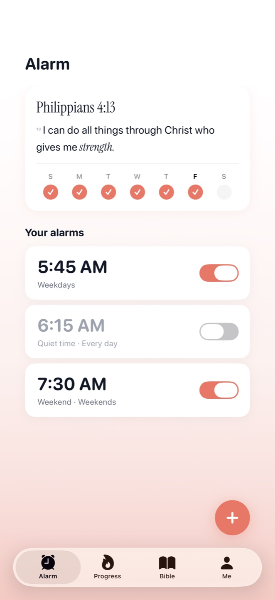
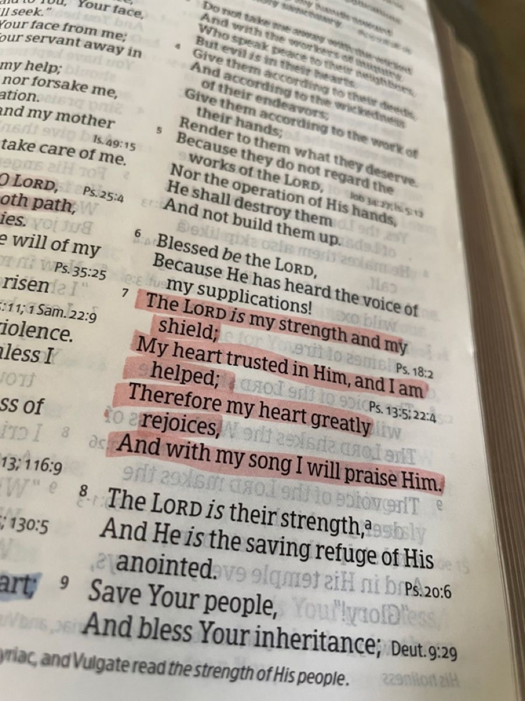
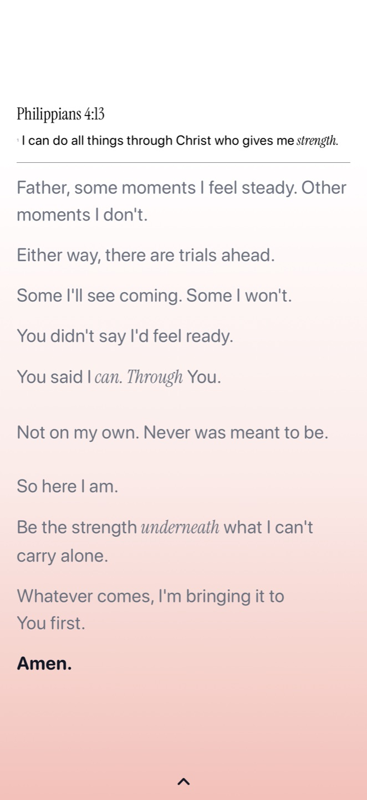
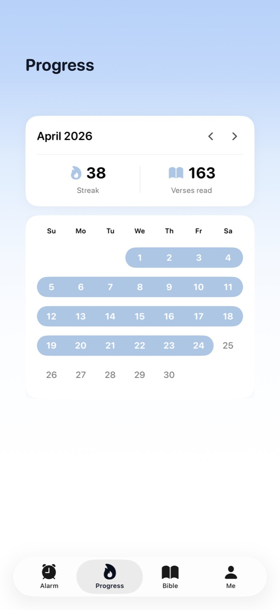

He is not here. He has risen.
Matthew 28:6
There is no snooze button. There is one way out.

Alarm stopped.
A prayer and a devotional, written for the verse you just scanned. Two minutes of stillness, then the day.

It rings until you photograph today's verse from a real Bible. Then comes a prayer written for that morning.
App Store · Easter Sunday 2026iPhone, iOS 26 and later.
Risen keeps reminding you until you scan your verse. That is the promise.
You can turn any alarm off whenever you like. You just can't snooze it.

A day only counts when the verse was scanned and the prayer was read. That's why the number means something.
Three trusted public domain translations built in. Pick one and every verse, prayer, and devotional follows it.
Risen scans the Bible on your shelf. The phone is the alarm. The Book is the point.
A widget keeps today's verse and your streak in view before you even unlock.
The name comes from the empty tomb. To wake is to rise, and to rise is to start the day with Him. One verse before your feet hit the floor changes the shape of a morning.
From Matthew 28:6 and 7Risen is built by one person who reads every message.
Email supportsatangscorgi@gmail.com · replies within a day or two
No, and that's the heart of the app. The alarm ends when today's verse is scanned. Until then, Risen keeps nudging you with reminders. You can still turn any alarm off entirely from the Alarm tab.
Any printed Bible in a major translation. Risen reads the words through your camera and matches the verse. Photos never leave your phone; only the text that was read is checked, and you can keep even that fully on-device.
One subscription, two options: $39.99 a year with a 3 day free trial, or $9.99 weekly. Managed and cancelled through your Apple ID settings, no account needed.
Your streaks, journal notes and reflections stay in Risen's local storage on your iPhone. You do not need a Risen account. Apple and RevenueCat handle subscriptions, and optional online verse checking uses the service records described in our Privacy Policy. Deleting the app removes its local data; backups and service records may remain.
Easter Sunday, April 5, 2026, on the App Store for iPhone.